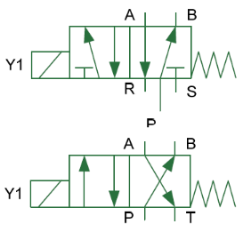
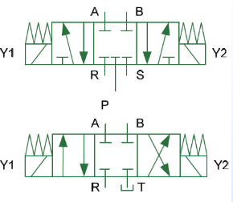
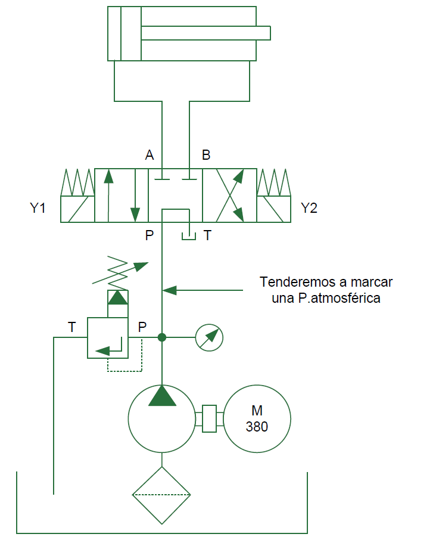
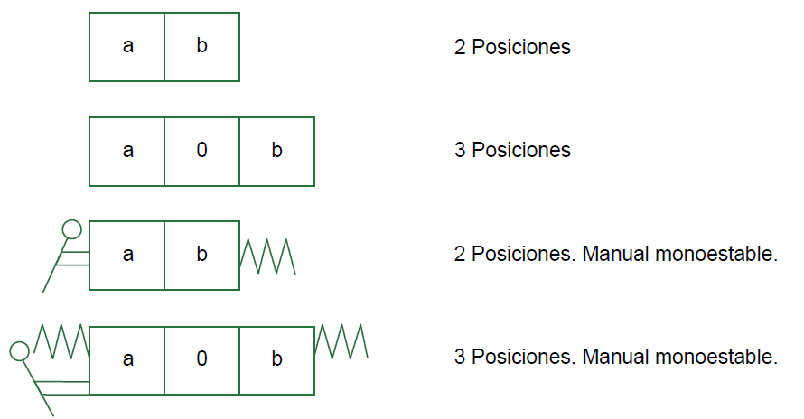
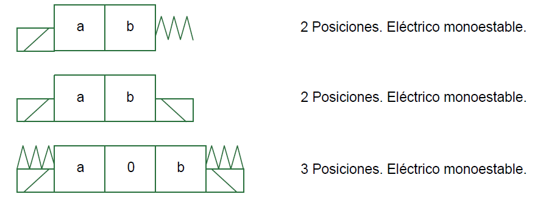
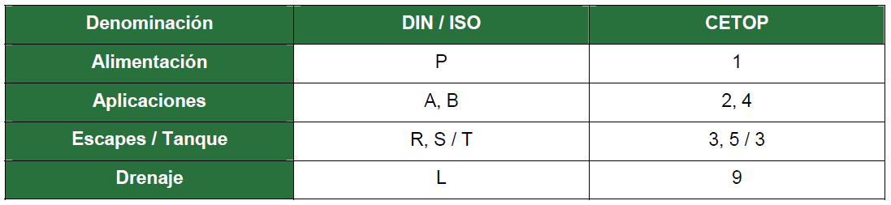

Navega por las pestañas para explorar los conceptos, funcionamiento y simbología de las válvulas direccionales.
Las válvulas direccionales controlan el paso y la dirección del fluido en un circuito, permitiendo o bloqueando su flujo hacia diferentes puntos de aplicación.
Su funcionamiento depende del número de vías y posiciones que posea. Las vías determinan las conexiones de la válvula: presión, trabajo y retorno (en hidráulica) o presión, trabajo y escape (en neumática).





En hidráulica se utilizan comúnmente válvulas de 4 vías y 3 posiciones. La tercera posición se emplea para fijar la posición del actuador o controlar la presión del sistema. El retorno del fluido se marca con la letra “T” y se prefiere un solo punto de retorno para simplificar el conexionado.
En neumática predominan las de 5 vías y 2 posiciones. En estos sistemas, suelen emplearse escapes diferenciados, marcados con las letras R y S.
Según la norma CETOP, cada vía se designa con letras específicas que identifican la presión, el retorno y las salidas de trabajo.
Un ejemplo característico es el centro tándem, que permite la recirculación del fluido entre la bomba y el tanque, favoreciendo la despresurización del sistema cuando no se requiere trabajo.

La simbología de las válvulas direccionales representa sus posiciones y accionamientos (manuales, mecánicos, eléctricos, etc.).
A continuación se muestra un ejemplo de la simbología utilizada para las válvulas direccionales, donde se aprecian las vías, posiciones y tipos de accionamiento.